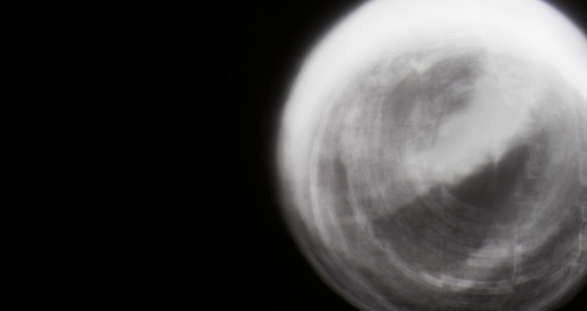

|
|

Line Segments Space, a three dimensional web of digital-physical thread subtends a null space. Dynamic graphic forms are articulated into the physical volume by the material of the thread and the semi-material of the light, creating a rich sparse canvas.
Itself, it hangs abstract and undefined, a set of thin positive elements entangling the dark negative space between. A 2D canvas is reduced from a surface piece into a line segment, but then constructed in another dimension, into a volume. Space becomes canvas. Light creates contrast and order on the lines to articulate digital matter. These digital forms inhabit the interconnected boundaries of space, segmenting visual mass into sprites, actors and scene. The visual gravity of the lines flooding the null space between. Line segments the space in order to suggest a form which is completed by the digital light.
|  |
Sphere Project
Long exposure photography Text copy for sphere project. Itself, it hangs abstract and undefined, a set of thin positive elements entangling the dark negative space between. A 2D canvas is reduced from a surface piece into a line segment, but then constructed in another dimension, into a volume. Space becomes canvas. Light creates contrast and order on the lines to articulate digital matter. These digital forms inhabit the interconnected boundaries of space, segmenting visual mass into sprites, actors and scene. The visual gravity of the lines flooding the null space between. Line segments the space in order to suggest a form which is completed by the digital light. |
An emulsion of digital light within physical space. Creating a habitat for digital forms to exist in our world.
A conversation between a tree and people using 3D light patterns using the tree's leaves as voxels.
A conversation between a tree and people using 3D light patterns using the tree's leaves as voxels.
A conversation between a tree and people using 3D light patterns using the tree's leaves as voxels.
A conversation between a tree and people using 3D light patterns using the tree's leaves as voxels.